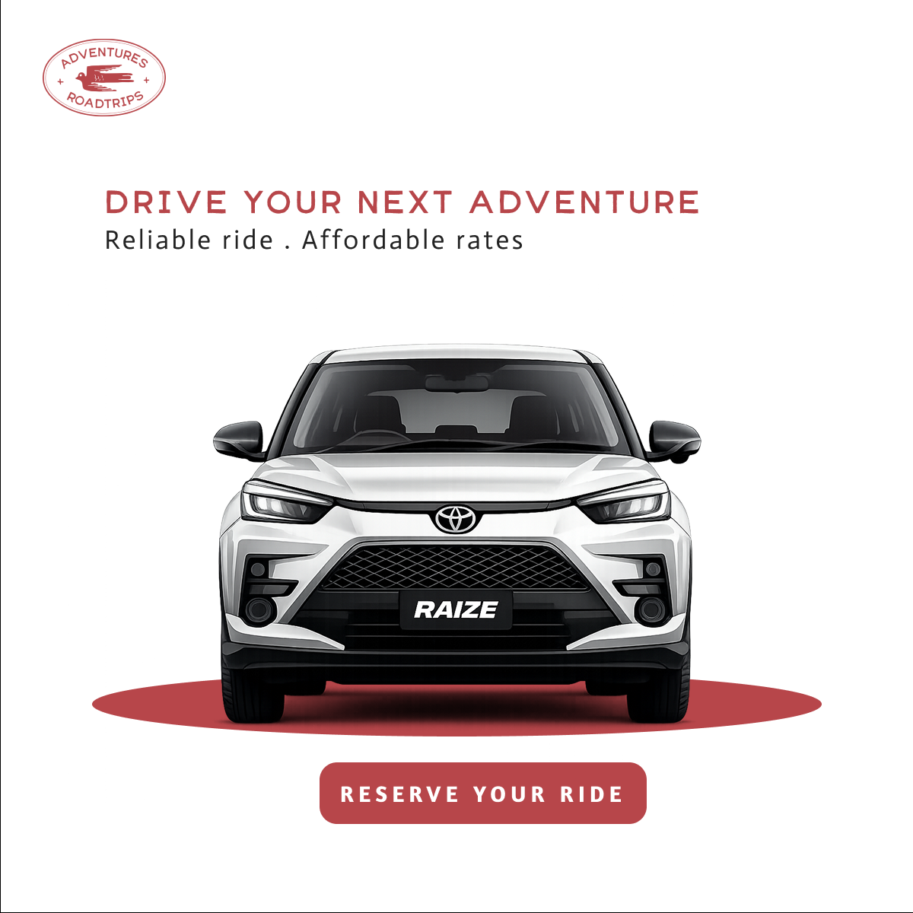

01 / SOCIAL
↗



Social Media Design
Creative posts, campaigns, and digital content made for brands.
Social media collections.
Browse the design work grouped by client or project. Select a collection to see its dedicated gallery.
ADVENTURE
Campaign visuals and social media content.
GOLDEN RIM
Brand-focused graphics and promotional layouts.
HMOM
Social content and supporting visual materials.
J&J
Creative assets and social media designs.
MFC
Selected client graphics and promotional content.